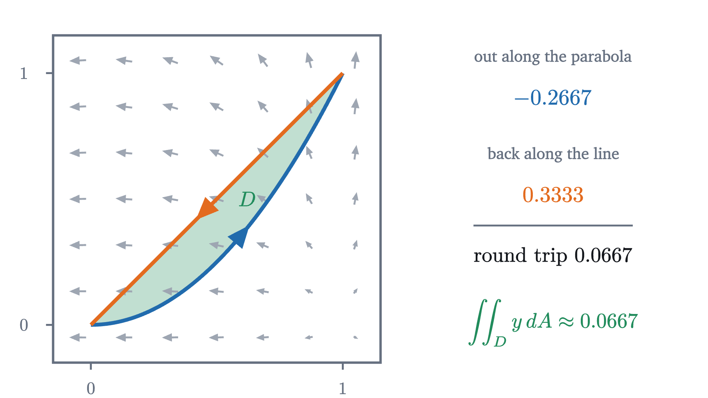
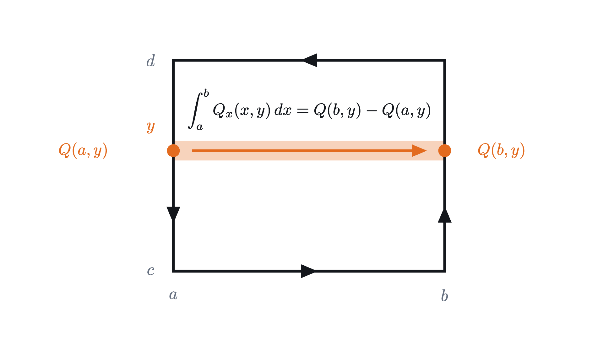
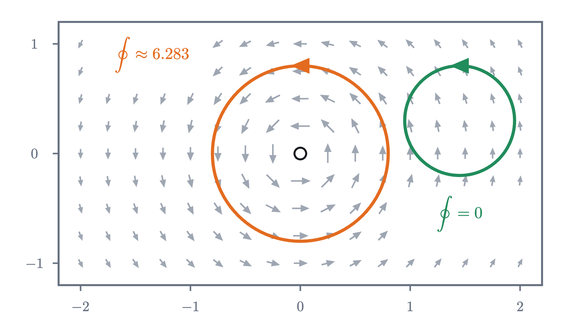

Green's theorem: the inside read from the boundary
A walk around the edge of a region, adding up a vector field along the way, equals the integral of the field's curl over the inside. Here is why.
AssumesDivergence and curl: reading a vector fieldDouble integrals: volume under a surfaceThe fundamental theorem of calculus, explained and proved
Surveyors once measured the area of a field on a map with a small instrument called a planimeter. You set its pointer on the outline of the field, trace once around, and read the area off a dial. The pointer never visits the interior. How can a trip around the boundary know how much is inside?
The answer is Green’s theorem, named for George Green, whose 1828 essay on electricity and magnetism contains a three-dimensional relative of it, and it is about much more than area. It says that a certain sum taken along the boundary of a region equals an integral over its inside. The reason, we will see, is a cancellation simple enough to check with two squares.
Adding up a field along a path
The previous lesson walked around a small square in a wind and added up the part of the wind that blows along the direction of travel, times the distance traveled. Wind at your back counts as positive, wind in your face as negative, and wind from the side does not count. We need the same sum for a path that curves.
Our wind is again $\mathbf{W}(x, y) = (x^2 - 1,\ xy)$, a vector field: a rule giving a vector $\bigl(P(x, y), Q(x, y)\bigr)$ at each point. Walk through it along the parabola $y = x^2$ from $(0, 0)$ to $(1, 1)$. Describe the walk by your position at time $t$:
During a short time $\Delta t$ you move by about $\mathbf{r}'(t)\,\Delta t$, where $\mathbf{r}'(t) = (1, 2t)$ is your velocity. The dot product of the wind with this small step, $\mathbf{W} \cdot \mathbf{r}'(t)\,\Delta t$, is the component of the wind along the step times the length of the step, which is exactly the quantity we want. Adding over the whole walk gives an ordinary integral in $t$. On the path the wind is $\mathbf{W}(t, t^2) = (t^2 - 1,\ t^3)$, so
The total is negative: for most of this walk the wind is against you.
The notation $P\,dx + Q\,dy$ records the recipe: replace $dx$ by $x'(t)\,dt$ and $dy$ by $y'(t)\,dt$. Two facts follow from the substitution rule for integrals, and we use them freely. Tracing the same curve in the same direction at a different speed gives the same value, so the integral belongs to the curve and its direction, not to the timetable. Tracing it in the opposite direction changes the sign.
Pause and try
Walk from $(0, 0)$ to $(1, 1)$ along the straight line $y = x$ instead, with $\mathbf{r}(t) = (t, t)$. Compute the line integral of $\mathbf{W}$. Is it the same as along the parabola?
Show answerHide answer
Here $\mathbf{r}'(t) = (1, 1)$ and $\mathbf{W}(t, t) = (t^2 - 1, t^2)$, so the integral is $\int_0^1 (2t^2 - 1)\,dt = \frac23 - 1 = -\frac13$. Along the parabola it was $-\frac{4}{15}$. The two paths join the same points and give different totals: for this wind, the route matters.
That difference is itself a circulation. Go out along the parabola and come back along the line. The return trip is the line walked backwards, worth $+\frac13$, so the round trip totals
Keep this number in mind. We will meet it again, computed without setting foot on the boundary.
Two squares that share a side
Now the cancellation. Take two unit squares side by side, $0 \le x \le 1$ and $1 \le x \le 2$, both with $0 \le y \le 1$, and compute the circulation of $\mathbf{W}$ counterclockwise around each.
For the left square: along the bottom, heading east, $\int_0^1 (x^2 - 1)\,dx = -\frac23$. Up the right side, where $x = 1$, the northward wind is $Q = y$, giving $\int_0^1 y\,dy = \frac12$. Back along the top, heading west, $+\frac23$. Down the left side, where $x = 0$ and $Q = 0$, nothing. Total: $\frac12$. For the right square the four sides give $\frac43$, $1$, $-\frac43$ and $-\frac12$, and the total is again $\frac12$.
Look at the side they share, the segment $x = 1$. The left square walks it upward and collects $+\frac12$. The right square walks the same segment downward and collects $-\frac12$. If we add the two circulations, those contributions cancel, and the six sides that remain are the outline of the $2 \times 1$ rectangle, walked counterclockwise. So
and nothing about this depended on the wind. Any side shared by two tiles is walked in opposite directions by its two neighbors.
Pause and try
The previous lesson showed that the circulation around a small square, divided by its area, approaches the curl $Q_x - P_y$, which for $\mathbf{W}$ is $y$. That suggests circulation is curl added up over area. Test the suggestion on the rectangle $0 \le x \le 2$, $0 \le y \le 1$: compute $\iint y\,dA$ over it.
Show answerHide answer
$\int_0^2 \int_0^1 y\,dy\,dx = \int_0^2 \frac12\,dx = 1$. It equals the circulation around the rectangle exactly, and over each unit square alone it gives $\frac12$, matching each square’s circulation.
From tiles to a region
The same cancellation works for any number of tiles. Cut a region into small squares and add up the circulations around all of them. Every interior side is shared by two tiles and drops out, and what survives is the circulation around the outer edge of the whole tiling. The animation at the top shows this for a disc: at each stage the sum over the tiles and the walk around the outer edge agree to every digit.
On the other side of the ledger, the circulation around each small tile is about its curl times its area. Adding these over the tiles is a Riemann sum, and as the tiles shrink it becomes the double integral of the curl. So we expect
The round trip of the first section is a test. Its inside is the region $D$ between $y = x^2$ and $y = x$, and
the number we found by walking the boundary.

Green’s theorem
To state the result exactly we need names for the kind of boundary allowed. A closed curve is simple if it does not cross itself. It is piecewise smooth if it consists of finitely many pieces, each traced by a function $\mathbf{r}(t)$ with a continuous derivative. A simple closed curve is positively oriented if it is traced counterclockwise, so that the region it encloses is on your left as you walk.
Each hypothesis has a job. “Simple” and “closed” make sure there is one inside (that a simple closed curve has exactly one inside is the Jordan curve theorem, which we take for granted). “Positively oriented” fixes the sign, since walking the other way reverses the left side. “Piecewise smooth” allows corners, as on a rectangle, while keeping the line integral defined. And $\mathbf{F}$ must be continuously differentiable on all of $D$, the inside included, so that the curl exists and is continuous at every point being integrated over. The last section shows what goes wrong without it.
Proof for a rectangle
For a rectangle the theorem can be proved completely, and the proof shows that the cancellation of interior sides is the fundamental theorem of calculus in disguise.

Compare with one variable. The fundamental theorem says that the integral of a derivative $F'$ over an interval equals $F(b) - F(a)$: a quantity computed at the boundary of the interval, which is its two endpoints, one counted with a plus sign and one with a minus. Green’s theorem says the same thing one dimension up, with the curl as the derivative and the oriented boundary curve as the endpoints.
General regions: a sketch
For other regions the tiling argument now gives more than we might have hoped. Let $D'$ be any region made of grid squares, such as the staircase shapes in the opening animation. For each tile, Green’s theorem holds exactly, by the proof just given. Add over the tiles. On the left, interior sides cancel and the outer edge remains. On the right, double integrals over the tiles add up to the double integral over $D'$. So Green’s theorem is proved for every region built from squares, with its boundary understood as the sides that did not cancel, each walked with its tile on the left.
What is still missing is the passage from a staircase region to a region with a curved boundary. As the grid is refined, the double integral over the staircase region does approach the double integral over $D$, because the sliver between the staircase edge and the curve has area tending to 0 and the curl is bounded. The line integrals need more care: the staircase edge does not approach the curve in length (a staircase from one corner of a square to the opposite corner has length 2 however fine its steps, while the diagonal has length $\sqrt2$), so it is not obvious that line integrals along it approach the line integral along $C$. They do, but showing it takes an argument we have not given. Textbooks close the gap by a different route: they prove the theorem directly for a region between two graphs, by the same fundamental-theorem computation as for the rectangle with curves as limits, and then cut a general region into pieces of that kind, with the cuts cancelling as shared sides do. We will use the theorem in the generality stated.
Area from a walk around the boundary
Now the planimeter. If a field has curl equal to 1 at every point, the right side of Green’s theorem is $\iint_D 1\,dA$, the area of $D$.
Pause and try
Find a vector field $(P, Q)$ whose curl $Q_x - P_y$ is 1 everywhere. Then find a different one.
Show answerHide answer
$(0, x)$ works: $Q_x = 1$, $P_y = 0$. So does $(-y, 0)$: $Q_x = 0$, $P_y = -1$. So does their average $\left(-\frac{y}{2}, \frac{x}{2}\right)$, half of the rigid rotation field, and there are many others.
The third form has a picture. For a short step from $\mathbf{r} = (x, y)$ to $\mathbf{r} + \Delta\mathbf{r}$, the quantity $\frac12(x\,\Delta y - y\,\Delta x)$ is half of a determinant, which is the signed area of the thin triangle with corners at the origin, $\mathbf{r}$ and $\mathbf{r} + \Delta\mathbf{r}$: positive if the step goes counterclockwise as seen from the origin, negative if clockwise.
A planimeter is a mechanical version of this. Its measuring wheel can roll only in one direction, so as the pointer moves, the wheel records the component of the pointer’s motion along a direction that depends on where the pointer is. That is a line integral of a vector field, and the linkage is built so that the field has constant curl. Green’s theorem then says the dial reads a fixed multiple of the area.
Where the theorem stops
The hypothesis on $\mathbf{F}$ matters too. The whirlpool field of the previous lesson,
has curl 0 at every point where it is defined. If Green’s theorem applied to the unit circle, the circulation around it would be $\iint 0\,dA = 0$. But on the unit circle $\mathbf{V}$ is the unit vector pointing along the direction of travel, so the circulation is the length of the circle, $2\pi$.

There is no contradiction, because the unit disc contains the origin, where $\mathbf{V}$ is not defined, let alone continuously differentiable. The theorem’s hypothesis asks for a field that is smooth on the whole region, and this one has a hole in its domain at exactly the place where all of the circulation is generated. Around any loop that does not enclose the origin the theorem applies, and the circulation is 0.
Check yourself
Let $C$ be the boundary of the square $0 \le x \le 2$, $0 \le y \le 2$, traced counterclockwise. What is $\oint_C (-y)\,dx + 3x\,dy$?
Step back. The theorem turns a sum along a boundary into a sum over an inside, and the whole reason is that shared sides are walked twice in opposite directions. Two squares made the cancellation plain. The hard part was passing from tiles to curved regions, and we said where our argument stopped. The reusable idea is the pattern itself: integrating a derivative over a region leaves only boundary terms. It gave the fundamental theorem on an interval and Green’s theorem in the plane, and the same pattern in space is the subject of the theorems of Gauss and Stokes.
Problems
Problems 1 and 2 are warm-ups, 3 to 6 combine ideas, and 7 and 8 go further.
Problem 1
Compute the line integral of $\mathbf{F} = (y, x)$ along the straight segment from $(0, 0)$ to $(2, 1)$.
Show solutionHide solution
Trace the segment by $\mathbf{r}(t) = (2t, t)$, $0 \le t \le 1$, with $\mathbf{r}'(t) = (2, 1)$. On it $\mathbf{F} = (t, 2t)$, so $\mathbf{F} \cdot \mathbf{r}' = 2t + 2t = 4t$, and $\int_0^1 4t\,dt = 2$.
Problem 2
Use Green’s theorem to find the circulation of $\mathbf{F} = (-y^2,\ xy)$ counterclockwise around the rectangle $0 \le x \le 3$, $0 \le y \le 2$.
Show solutionHide solution
$Q_x = y$ and $P_y = -2y$, so the curl is $y + 2y = 3y$. The field is a polynomial field and the rectangle’s boundary is a positively oriented piecewise smooth simple closed curve, so the circulation is $\int_0^3 \int_0^2 3y\,dy\,dx = \int_0^3 6\,dx = 18$.
Problem 3
Verify Green’s theorem for the wind $\mathbf{W} = (x^2 - 1,\ xy)$ on the triangle with corners $(0, 0)$, $(1, 0)$ and $(1, 1)$ by computing both sides.
Show solutionHide solution
The double integral. The curl is $y$, and the triangle is $0 \le x \le 1$, $0 \le y \le x$: $\int_0^1 \int_0^x y\,dy\,dx = \int_0^1 \frac{x^2}{2}\,dx = \frac16$.
The line integral, counterclockwise. Bottom, $\mathbf{r} = (t, 0)$, velocity $(1, 0)$: $\int_0^1 (t^2 - 1)\,dt = -\frac23$. Right side, $\mathbf{r} = (1, t)$, velocity $(0, 1)$: $\int_0^1 Q(1, t)\,dt = \int_0^1 t\,dt = \frac12$. Hypotenuse from $(1, 1)$ back to $(0, 0)$: this is the reverse of $\mathbf{r} = (t, t)$, along which the integral is $\int_0^1 \bigl((t^2 - 1) + t^2\bigr)\,dt = -\frac13$, so it contributes $+\frac13$. Total: $-\frac23 + \frac12 + \frac13 = \frac16$. The two sides agree.
Problem 4
(a) Show that for the straight segment from $(x_1, y_1)$ to $(x_2, y_2)$, $\frac12 \int x\,dy - y\,dx = \frac12 (x_1 y_2 - x_2 y_1)$. (b) Use this to find the area of the quadrilateral with corners $(0, 0)$, $(4, 0)$, $(5, 3)$, $(1, 2)$, listed counterclockwise.
Show solutionHide solution
(a) Trace the segment by $x = x_1 + t\,\Delta x$, $y = y_1 + t\,\Delta y$ for $0 \le t \le 1$, where $\Delta x = x_2 - x_1$ and $\Delta y = y_2 - y_1$. Then $x\,y' - y\,x' = (x_1 + t\,\Delta x)\Delta y - (y_1 + t\,\Delta y)\Delta x = x_1 \Delta y - y_1 \Delta x$, a constant, and it equals $x_1(y_2 - y_1) - y_1(x_2 - x_1) = x_1 y_2 - x_2 y_1$. Integrating from 0 to 1 and halving gives the claim.
(b) By the area theorem, the area is the sum of $\frac12(x_1 y_2 - x_2 y_1)$ over the four sides in order: $\frac12\bigl[(0 \cdot 0 - 4 \cdot 0) + (4 \cdot 3 - 5 \cdot 0) + (5 \cdot 2 - 1 \cdot 3) + (1 \cdot 0 - 0 \cdot 2)\bigr] = \frac12 (0 + 12 + 7 + 0) = 9.5$. This is the surveyor’s “shoelace formula”, and it is Green’s theorem for polygons.
Problem 5
Let $\mathbf{V}$ be the whirlpool field, with curl 0 away from the origin. (a) Compute its circulation counterclockwise around the circle of radius $R$ centered at the origin, directly from the definition. (b) Use the cancellation of shared sides to explain why the answer in (a) cannot depend on $R$.
Show solutionHide solution
(a) With $\mathbf{r}(t) = (R\cos t, R\sin t)$ we have $x^2 + y^2 = R^2$, so $\mathbf{V} = \frac{1}{R^2}(-R\sin t, R\cos t)$ and $\mathbf{r}' = (-R\sin t, R\cos t)$. Their dot product is $\frac{1}{R^2} \cdot R^2 = 1$, and $\int_0^{2\pi} 1\,dt = 2\pi$.
(b) Take two such circles, of radii $R_1 < R_2$, and the ring between them. Cut the ring into two halves along the $x$-axis. Each half is bounded by a simple closed curve and does not contain the origin, so $\mathbf{V}$ is continuously differentiable on it and Green’s theorem gives circulation $\iint 0\,dA = 0$ around each half. Add the two. The cuts along the $x$-axis are walked in opposite directions by the two halves and cancel. What remains is the outer circle counterclockwise and the inner circle clockwise. So (outer circulation) $-$ (inner circulation) $= 0$: the two are equal.
Problem 6
Let $f$ have continuous second partial derivatives on the whole plane, and let $\mathbf{F} = \nabla f = (f_x, f_y)$. (a) Show that the circulation of $\mathbf{F}$ around every curve satisfying the hypotheses of Green’s theorem is 0. (b) Two piecewise smooth paths from $A$ to $B$, neither crossing itself, meet only at their ends. Show that $\mathbf{F}$ has the same line integral along both. (c) Why does the wind $\mathbf{W}$ not behave this way?
Show solutionHide solution
(a) The curl of $\mathbf{F}$ is $\partial_x f_y - \partial_y f_x = f_{yx} - f_{xy}$, which is 0 because mixed partial derivatives of such a function are equal (Clairaut’s theorem). The field is continuously differentiable everywhere, so Green’s theorem gives circulation $\iint_D 0\,dA = 0$. (b) The first path followed by the second one reversed is a simple closed curve. If it is positively oriented, (a) says its circulation is 0; if not, reverse it, which only changes the sign of 0. That circulation is (integral along the first path) $-$ (integral along the second), so the two are equal. (c) The curl of $\mathbf{W}$ is $y$, which is not 0, so $\mathbf{W}$ is not a gradient. Along the parabola and the line from $(0, 0)$ to $(1, 1)$ its integrals differed by $\frac{1}{15}$, which is exactly the integral of its curl over the region between them.
Problem 7
(The flux form.) Let $C$, $D$ and $\mathbf{F} = (P, Q)$ be as in Green’s theorem. Apply the theorem to the field $(-Q, P)$ to show that $\oint_C P\,dy - Q\,dx = \iint_D (P_x + Q_y)\,dA$. Then explain why the left side is the flux of $\mathbf{F}$ outward across $C$.
Show solutionHide solution
The field $(-Q, P)$ is continuously differentiable where $\mathbf{F}$ is. Green’s theorem for it reads $\oint_C (-Q)\,dx + P\,dy = \iint_D \bigl(\partial_x P - \partial_y(-Q)\bigr)\,dA = \iint_D (P_x + Q_y)\,dA$, which is the claim. For the interpretation: a step along the curve is $(\Delta x, \Delta y)$. Turning it a quarter turn clockwise gives $(\Delta y, -\Delta x)$, a vector of the same length pointing to the right of the direction of travel, which for a counterclockwise curve is outward. The dot product of $\mathbf{F}$ with it is $P\,\Delta y - Q\,\Delta x$: the outward component of $\mathbf{F}$ times the length of the step, which is the flux across that step. So the total outflow across the boundary equals the integral of the divergence $P_x + Q_y$ over the inside. This is the divergence theorem in the plane.
Problem 8
The astroid is the curve $x = \cos^3 t$, $y = \sin^3 t$, $0 \le t \le 2\pi$, a four-pointed star traced counterclockwise. Find the area it encloses. (You may use $\int_0^{2\pi} \sin^2 t \cos^2 t\,dt = \frac{\pi}{4}$.)
Show solutionHide solution
$x' = -3\cos^2 t \sin t$ and $y' = 3\sin^2 t \cos t$. Then
Both coordinates have continuous derivatives, so the curve is piecewise smooth in our sense (the velocity vanishes at the four cusps, which our definition permits), and it is simple and positively oriented, so the area is $\frac12 \int_0^{2\pi} 3\sin^2 t\cos^2 t\,dt = \frac32 \cdot \frac{\pi}{4} = \frac{3\pi}{8} \approx 1.18$. As a check, the astroid lies inside the unit circle, of area $\pi \approx 3.14$, and inside the square with corners $(\pm 1, 0)$, $(0, \pm 1)$, of area 2, since its sides bow inward.